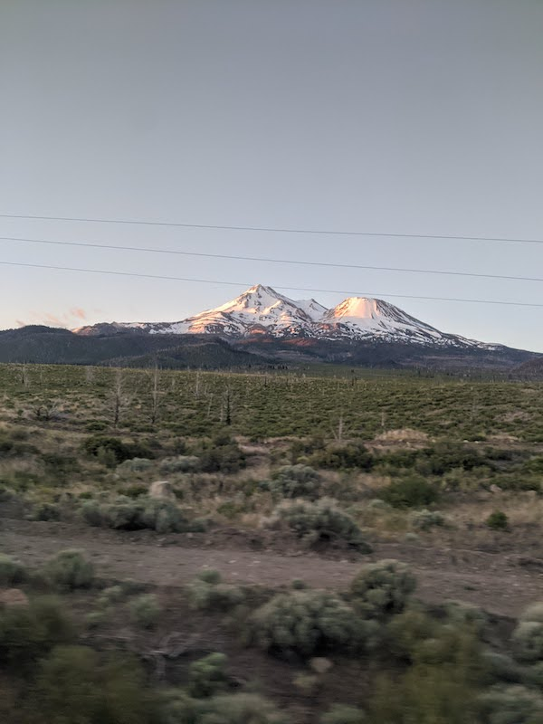
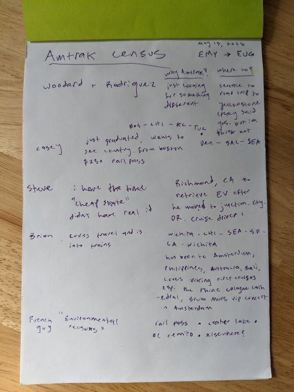
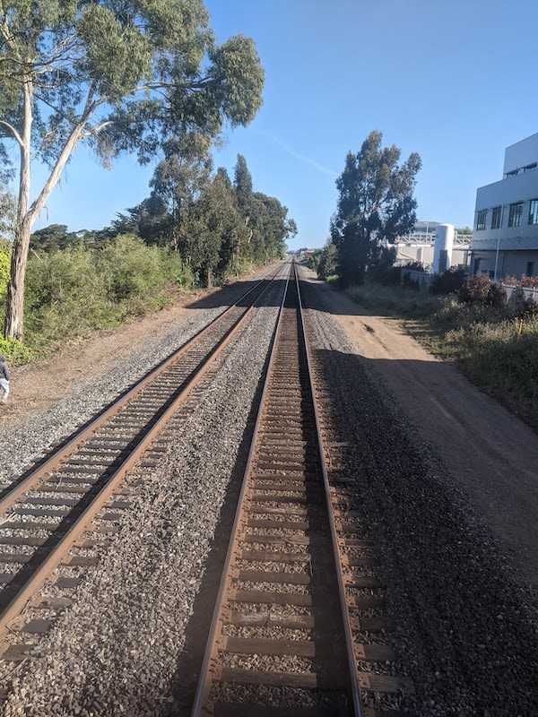
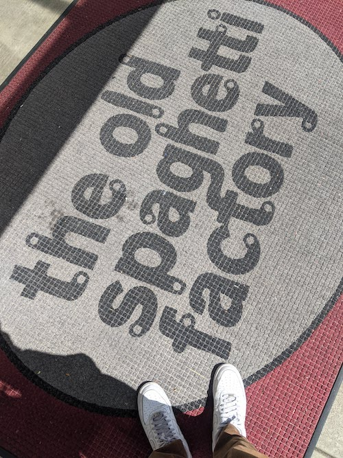

May 24, 2026
I took the 15 hour amtrak journey to see my sister and parents in Eugene, OR last week. I didn't sleep well but I did get to see a Mt. Shasta sunrise.

I asked the Radish kitchen what I should do on the train and they suggested
Mission accomplished. The Sabra hummus and pretzel pack went nicely with the gallon bag of nuts and chocolate I had brought and coffee cake I had from the Eugene farmer's market.

Most folks said "well, I have the time" and were interested in seeing a different side of the country. Or they had some other disqualifier for plane travel like "no real ID" or "want to save money".
I especially liked talking to Brian from Wichita who has travelled all over. He was practically giddy telling me about the virtues of a Viking cruise on the Rhine and how detailed the Cologne cathedral is. Opened my mind a bit knowing that people from Wichita get out there in the word to Europe, the Philippines, Australia, and Chemult, OR I guess.
I like the rural nature of train travel and how you see what life might be like in small towns and behind the warehouses and run down mills and factories. Air travel mostly takes you to urban centers.
I didn't do this

Nice to see Isabel doing so well
Amazing farmers market
Fun seeing John mUlaney, Mike birbiglia, fred armisen at the Cuthbert ampitheater
Fun having a slumber party in the hotel with the parents just before Alex had her baby
It's hard to have a bad trip when you're basking in the glow of one of our contry's finest dining establishments.
